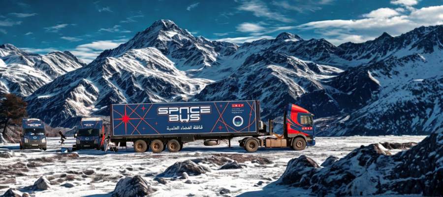
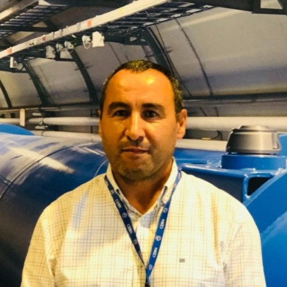
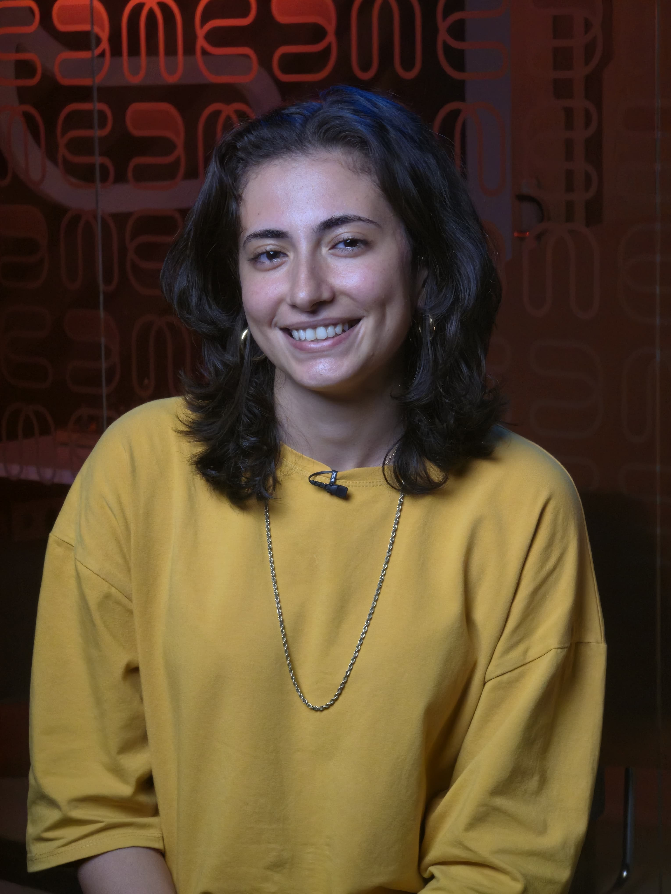
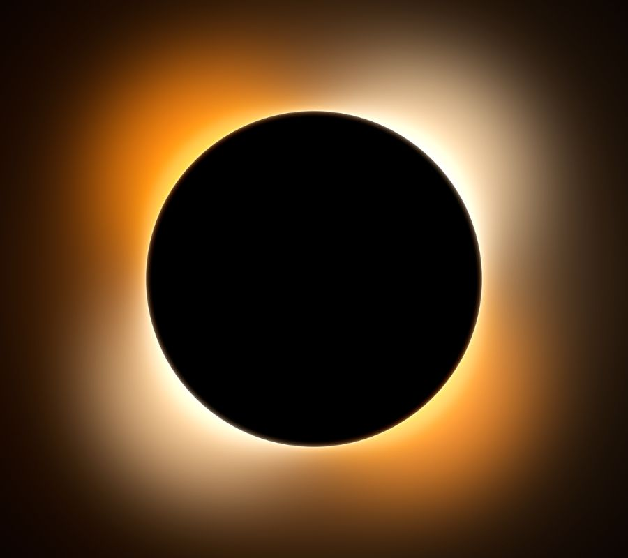
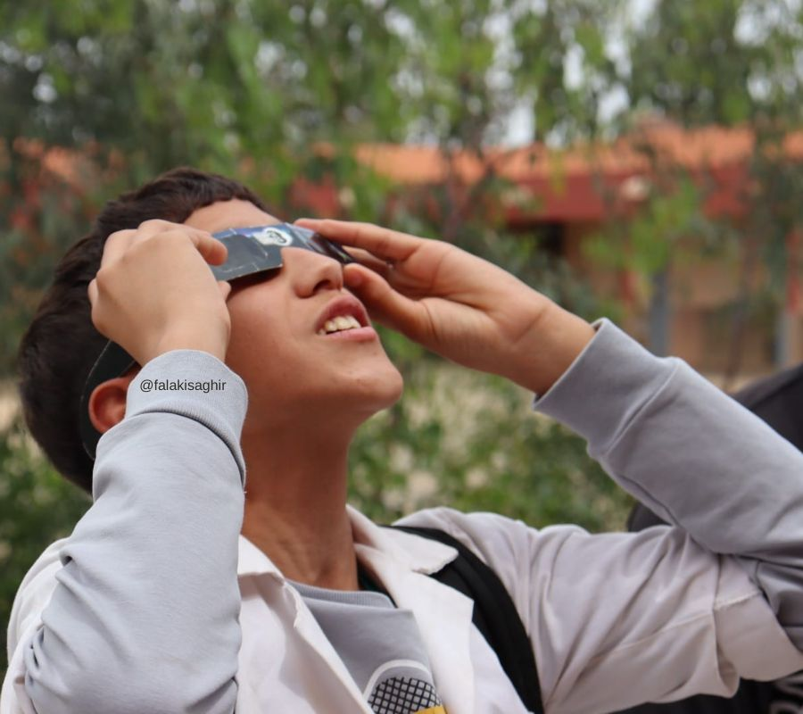
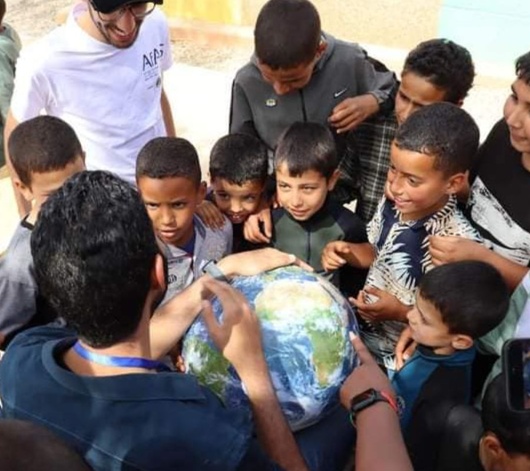
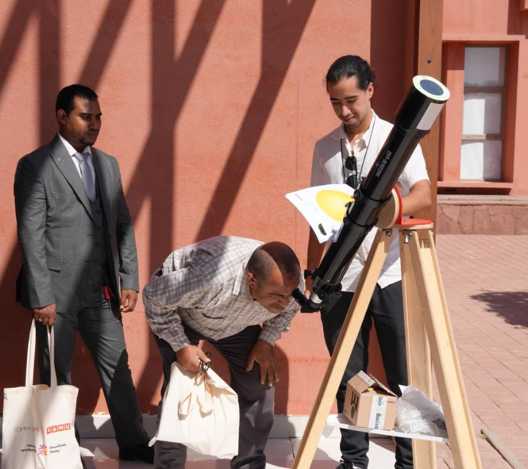
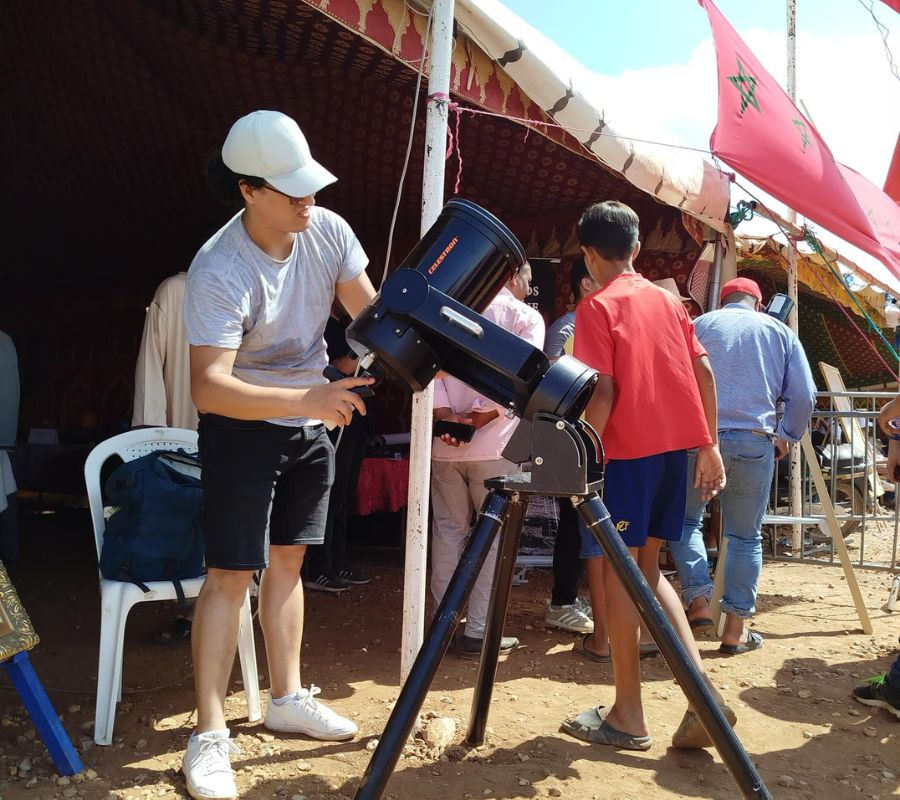
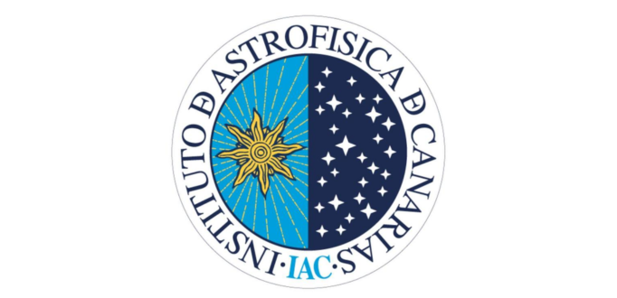
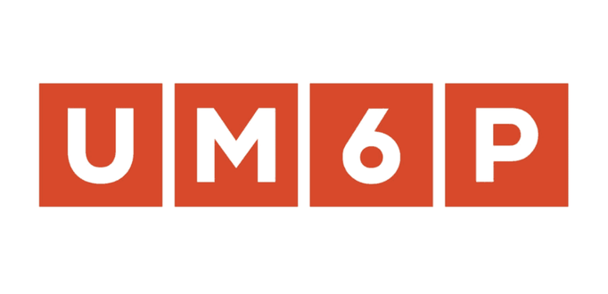

UM6P
SPACEBUS
A mobile science lab bringing the cosmos to Morocco's schools and communities — from the Atlantic coast to the eclipse path.
The UM6P SpaceBus is a fully equipped mobile science laboratory housed in a branded vehicle. In the weeks before the August 2027 eclipse, it will travel a curated route through Northern Morocco — visiting schools, universities, medinas, and public squares — bringing hands-on astronomy workshops directly to communities.
Each stop features safe solar observation with filtered telescopes, eclipse science demonstrations, pinhole camera construction, and student data registration for the observation network.

Students safely observe the Sun through H-alpha and white-light filtered telescopes, seeing sunspots, prominences, and solar granulation with their own eyes — a transformative first encounter with our nearest star.
Participants build their own pinhole projection cameras from simple materials, projecting a safe image of the solar disc. They take these cameras home as tools for eclipse day observation on August 2, 2027.
An interactive outdoor demonstration that physically scales the distances and sizes of planets in our solar system — a kinesthetic activity that makes the true vastness of space intuitively comprehensible.
Age-appropriate talks by UM6P and IAC scientists explaining the physics of eclipses, the solar corona, and the role students can play as citizen scientists in the August 2027 observation network.
For advanced groups: a hands-on introduction to the imaging systems used by citizen scientist stations — assembling, focusing, and capturing solar images with affordable Raspberry Pi-based instruments.
SpaceBus visits are official recruitment events for the citizen science network. Teachers and students can register on-site to become observation station operators during the 2027 eclipse, with full training support.
UNDERSTAND
THE ECLIPSE
Everything you need to know about total solar eclipses, the solar corona, and how to observe safely.
A total solar eclipse occurs when the Moon passes directly between Earth and the Sun, perfectly blocking the solar disc. This alignment is only possible because the Moon appears almost exactly the same angular size as the Sun — a cosmic coincidence unique in our solar system. During totality, the sky darkens to twilight, stars appear, and the corona blazes into view.
The corona is the Sun's outermost atmospheric layer, extending millions of kilometers into space. It is millions of degrees hotter than the visible solar surface — a paradox physicists are still working to explain. Its delicate feathery streamers, plasma jets, and magnetic structures are only visible from Earth during the brief minutes of total eclipse, or from space-based coronagraphs.
The August 2, 2027 eclipse will be the longest total solar eclipse in Morocco in centuries, with totality lasting up to 6 minutes 22 seconds. Combined with Morocco's high atmospheric transparency, its geographic position along the African eclipse belt, and the planned solar maximum conditions in 2027, this is an exceptionally rare opportunity for coronal science.
Never look directly at the Sun without proper solar filters. Only certified ISO 12312-2 solar eclipse glasses or #14 welder's glass provide safe direct viewing. Regular sunglasses, phone screens, and photographic filters are NOT safe. The only exception is during the precise seconds of totality, when the photosphere is completely blocked. All SpaceBus stations will be equipped with approved safety materials.
SCIENCE
OBJECTIVES
Our citizen science network will produce publication-quality data contributing to fundamental questions in solar physics.
High-resolution imaging of coronal streamers, plumes, and helmet structures across the solar limb. The distributed network enables stereoscopic and time-resolved mapping impossible from a single location.
The 60+ minute continuous dataset — assembled from overlapping station observations — enables study of temporal evolution in the corona, including CME precursors, wave propagation, and plasma flows.
Polarimetric measurements from select stations will constrain coronal magnetic field geometry, contributing to improved models of solar wind acceleration and space weather prediction.
All calibrated images and metadata will be deposited in a permanent, publicly accessible repository. Every participating citizen scientist receives a digital credential acknowledging their scientific contribution.
Station site selection, instrument assembly, volunteer recruitment, and initial training across Morocco.
Full dress rehearsal with the citizen science network during the 2026 Spanish eclipse. Equipment calibration and data pipeline testing.
Mobile education unit tours Northern Morocco, recruiting and training the final volunteer cohort. Final site preparation and equipment checks.
All stations activated. Real-time data collection during totality. Live stream from primary stations. Totality 09:44–09:53 WEST.
Calibrated dataset assembled, scientific analysis conducted, open archive released. Peer-reviewed publications submitted with full citizen scientist credits.
2 Aug 2027
MEET THE
SCIENTISTS
Our interdisciplinary team brings together solar physicists, educators, engineers, and outreach specialists from UM6P, IAC, and partner institutions.








NEWS &
GALLERY
Latest updates from the project, the SpaceBus team, and our IAC partners — plus a growing gallery from our preparatory missions.
The collaboration marks a milestone in Moroccan-European scientific cooperation, establishing a joint committee to oversee the citizen science network and coronal research programme.
Read more →Volunteer observers from the Morocco citizen science network will participate in a full rehearsal during the 2026 Spanish eclipse, testing instruments and data pipeline under real eclipse conditions.
Read more →With the Sun near solar maximum and Morocco's exceptional atmospheric conditions, the August 2027 eclipse offers ideal conditions for studying coronal mass ejections and the elusive mechanism of coronal heating.
Read more →




Download high-resolution logos, project photographs, press releases, and media contact information. For interview requests or exclusive coverage opportunities, contact our communications team.
OUR
PARTNERS
This project is made possible through the commitment of institutions, sponsors, and supporters who believe in the power of science for all.


We are seeking institutional and corporate partners to help equip observation stations, fund the SpaceBus, and expand our reach to more Moroccan schools. Partners receive co-branding on all materials, recognition in the scientific archive, and access to the historic eclipse data.